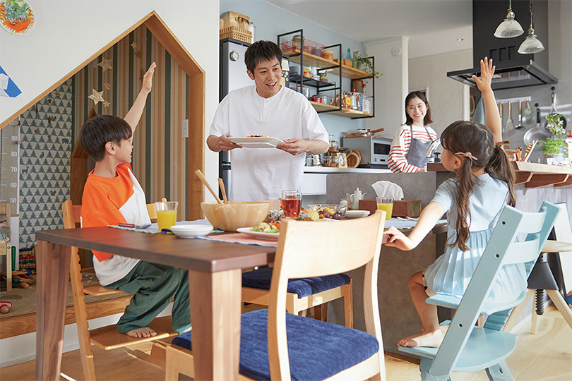
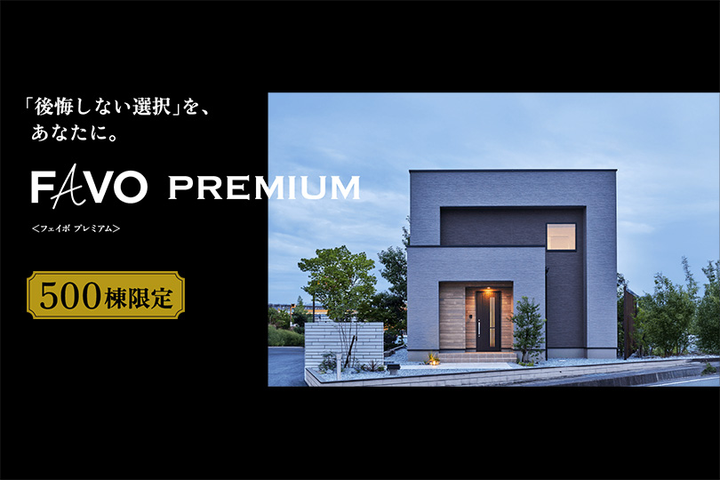
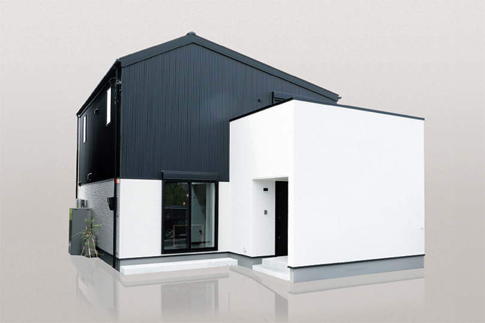
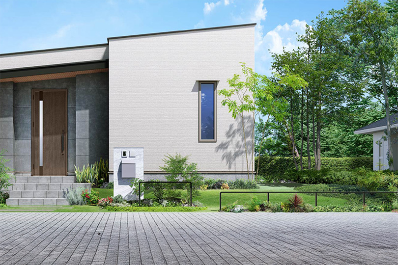
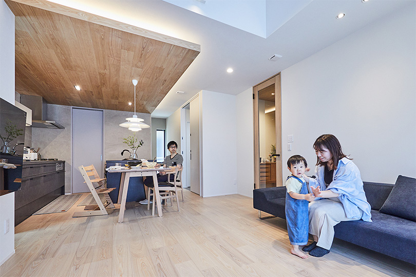

① 会社・基本データ

アイフルホームは1984年に日本で初めて木造軸組工法による住宅フランチャイズシステムを導入した、LIXILグループ傘下の住宅FCチェーン。「こどもにやさしい は みんなにやさしい」をスローガンに掲げ、キッズデザイン賞を業界最多レベルで受賞し続けている。
| 項目 | 内容 |
|---|---|
| 運営会社 | 株式会社LIXIL住宅研究所（アイフルホームカンパニー） |
| 設立 | 2002年3月12日（LIXIL住宅研究所）／1984年（アイフルホーム創業） |
| 代表者 | 代表取締役社長 加嶋伸彦（LIXIL住宅研究所）／プレジデント 樋口幸太（アイフルホームカンパニー） |
| 本社 | 東京都品川区西品川1-1-1 大崎ガーデンタワー |
| 資本金 | 1億円（LIXIL住宅研究所） |
| 売上高 | 約167億円（2025年3月期 / マイナビ2027公式採用情報）※旧版記載160億6,600万円は情報源により差異あり |
| 従業員数 | 197名（2025年3月現在 / マイナビ2027）※公式会社概要では202名（2024年4月現在）を併記 |
| 累計契約棟数 | 20万棟超（3ブランド合計 / 2024年2月末時点） |
| 年間着工棟数 | 約2,500棟（グループ全体 / 2023年度3ブランド合計2,585棟ベース） |
| 加盟店数 | 147店（2025年3月現在 / マイナビ2027）※公式2024年7月時点では約157店 |
| 対応エリア | 全国（フランチャイズ展開 / 約380エリアに区分） |
| 事業形態 | 住宅フランチャイズチェーン（FC）本部 |
| 親会社 | 株式会社LIXIL |
LIXIL住宅研究所のブランド構成
| ブランド | 累計棟数 | 加盟店数 | 工法 | 特徴 |
|---|---|---|---|---|
| アイフルホーム | 約17.9万棟（2024年2月末） | 157店（2024年7月）※最新では147店の公式言及あり | 木造軸組 | キッズデザイン・LIXIL製品標準・コスパ重視 |
| フィアスホーム | 3,500棟超 | 18店 | 木造軸組 | 高気密高断熱・パッシブデザイン |
| GLホーム | 17,000棟超 | 13店 | 2×6工法 | 北米スタイル・輸入住宅テイスト |
フランチャイズ（FC）モデルの特徴
アイフルホームは「より良い家を、より多くの人に、より合理的に提供する」を使命に掲げる。
- FC本部（LIXIL住宅研究所）の役割：商品開発・技術支援・研修・広告宣伝・品質管理基準の策定
- 加盟店（地元工務店）の役割：実際の設計・施工・販売・アフターサービス
- メリット：LIXILグループのスケールメリットで高品質設備を標準装備しつつ、地元工務店の地域密着サービスを享受できる
- 注意点：加盟店ごとに施工品質・営業対応・アフターサービスに差が出る場合がある
一言で言うと？
LIXILグループのスケールメリットで高品質な設備を標準装備しながら、地元工務店の地域密着サービスを両立。コストパフォーマンスに優れた子育て住宅が最大の強み。
② 商品ラインナップと坪単価
2026年現在、坪単価の目安は全商品平均で約70万円。ロディナ（55万円〜）からFAVO PREMIUM（断熱等級7対応）まで幅広い。
注文住宅（自由設計）



平屋
| 商品名 | 坪単価目安（2026年） | 主な特徴 |
|---|---|---|
| Mid Style | 実勢約79万円（公式参考プラン29坪2,300万円税抜ベース、税込表示では坪約87万円相当） | 平屋専門商品（2025年8月発売）。「ミッドテリア」の半屋外空間で内と外をつなぐ暮らし |
坪数別の建築総額シミュレーション
| 坪数 | 坪単価目安 | 本体工事費 | 建築総額（目安） |
|---|---|---|---|
| 25坪 | 約63万円 | 約1,575万円 | 約2,200万円 |
| 30坪 | 約63万円 | 約1,890万円 | 約2,700万円 |
| 35坪 | 約66〜83万円 | 約2,310〜2,905万円 | 約3,000〜3,800万円 |
| 40坪 | 約66〜83万円 | 約2,640〜3,320万円 | 約3,400〜4,300万円 |
| 平屋 | 約38〜63万円 | — | 約1,500〜2,400万円 |
③ 構造・耐震性能
グランドスクラム構法
アイフルホームの標準構法。木造軸組工法をベースに、4つの独自技術で耐震性と品質安定性を大幅に強化。
| 技術 | 詳細 |
|---|---|
| 構造用集成材 | スギ無垢材比で圧縮・曲げ強度約1.4倍。1本ごとにJASマーク品質証明 |
| テクノスター金物 | 地震の力が集中する接合部を強化。せん断耐力約1.4倍、引抜耐力約2.1倍。110年以上の耐用年数。スリット加工で木の断面欠損を最小化 |
| 剛床工法 | 28mm厚の構造用合板で床を一体化した面構造。ねじれ・ゆがみを抑え、耐震性・耐火性・床たわみ・床鳴りを低減。荷重試験で1t以上に耐えることを確認 |
| 通気工法 | 外壁・小屋裏・床下の空気流通で湿気をコントロール。構造材の腐食・劣化を防止 |
耐震等級
| 項目 | 内容 |
|---|---|
| 耐震等級 | 耐震等級3（最高等級）を基本設計 |
| 備考 | 品確法に基づく住宅性能表示制度の最高基準。選択プランや積雪地域では異なる場合あり |
制震システム「EVAS（エヴァス）」
- 原理：高層ビルで採用される粘弾性体を住宅に応用した次世代制震システム
- 効果：建物変形量を約1/2に低減
- 特徴：繰り返しの地震に対応。制震装置のメンテナンスフリー
基礎
全棟で地盤調査を実施。ベタ基礎を基本仕様とし、基礎底面全体の支持力で建物を支える設計。
④ 断熱性能
UA値と断熱等級
アイフルホームは商品グレードによって断熱性能が大きく異なる。2024年のFAVOリニューアルでUA値0.35を標準化し、FAVO PREMIUMでは断熱等級7（UA値0.26）、「すごい家。」ではさらに上のUA値0.23（寒冷地仕様0.20）まで到達。
| 商品・仕様 | UA値目安（6地域） | 断熱等級 | HEAT20基準 |
|---|---|---|---|
| すごい家。 | 0.23 W/m²K（寒冷地仕様0.20） | 等級7（最高） | G3クリア |
| FAVO PREMIUM | 0.26 W/m²K | 等級7 | G3クリア |
| FAVO（標準） | 0.35 W/m²K | 等級6 | G2クリア |
| Lodina（ロディナ） | 0.46〜0.55 W/m²K（推定） | 等級5 | ZEH基準 |
| （参考）国の省エネ基準 | 0.87 W/m²K | 等級4 | — |
HQP（ハイクオリティパネル）
アイフルホーム独自の高性能断熱パネル。構造用面材・ネオマフォーム（旭化成建材製）・粘弾性体（制震機能）を工場で一体化。
| 仕様 | 断熱材 | 厚さ |
|---|---|---|
| HQP（標準） | ネオマフォーム | 70mm |
| HQP-W（ダブル断熱） | ネオマフォーム | 70mm＋45mm＝115mm |
- ネオマフォームは世界最高レベルの熱伝導率（λ=0.020 W/(m・K)）
- ネオマフォーム70mmで高性能グラスウール10K 151mm相当の断熱性能
- HQP-Wなら高性能グラスウール10K 247mm相当
窓の仕様
| グレード | 仕様 |
|---|---|
| 標準（FAVO） | アルミ＋樹脂複合サッシ＋TW断熱Low-E複層ガラス |
| FAVO PREMIUM | アルゴンガス入りトリプルガラスサッシ（耐風圧S4・水密W5） |
他社との断熱性能比較
| ハウスメーカー | UA値（代表値） | 断熱等級 |
|---|---|---|
| 一条工務店（i-smart） | 0.25 | 等級7 |
| アイフルホーム（FAVO PREMIUM） | 0.26 | 等級7 |
| スウェーデンハウス | 0.38 | 等級6 |
| アイフルホーム（FAVO標準） | 0.35 | 等級6 |
| 住友林業 | 0.46 | 等級5 |
| 積水ハウス（木造） | 0.46〜0.60 | 等級5 |
| ヘーベルハウス（鉄骨） | 0.55〜0.60 | 等級5 |
⑤ 気密性能
C値（相当隙間面積）
| 項目 | 数値 |
|---|---|
| 公式C値（全棟平均） | 0.4 cm²/m²（2023〜2024年度実測平均） |
| 全棟気密測定 | 実施（性能報告書で施主に提供） |
アイフルホームは全棟で気密測定を実施し、性能報告書で確かなC値を施主に提供する。大手ハウスメーカーでは全棟気密測定を行わないメーカーが多い中、これは大きな差別化ポイント。
他社との気密性能比較
| ハウスメーカー | C値 | 全棟測定 |
|---|---|---|
| アイフルホーム | 0.4（全棟平均） | 全棟実施 |
| 一条工務店 | 0.59（全棟平均） | 全棟実施 |
| アイ工務店 | 全棟実施 | 全棟実施 |
| 住友林業 | 非公表 | 希望者のみ |
| 積水ハウス | 非公表 | 実施せず |
| ヘーベルハウス | 非公表 | 実施せず |
| ミサワホーム | 非公表 | 実施なし |
アイフルホームのC値0.4は一条工務店の0.59を上回る数値。全棟気密測定を実施し報告書を出す透明性も評価できる。ローコスト〜中価格帯のHMとしては非常に優秀な気密性能。
⑥ 換気・空調システム
第一種ダクトレス熱交換換気システム
| 項目 | スペック |
|---|---|
| 方式 | 第一種ダクトレス熱交換換気 |
| 熱交換効率 | 約60〜80% |
| フィルター | PM2.5・花粉を約95%除去する高性能フィルター |
| メンテナンス | 壁掛け式でダクトなし。フィルター清掃が容易 |
| 電気代 | 月額100〜500円程度 |
全館空調「BeCA（ビーカ）」（オプション）
パナソニックの全館空調熱交換気システムを採用。24時間365日どの部屋も心地よい温度を維持。2種類のフィルターでハウスダストを遮断。
ホルムアルデヒド吸着せっこうボード
FAVO PREMIUMでは室内の有害物質を吸着・分解するせっこうボードを標準採用。シックハウス対策として有効。
⑦ デザイン・キッズデザイン

キッズデザイン賞 受賞歴
アイフルホームは「こどもにやさしい は みんなにやさしい」をスローガンに、社内にキッズデザイン研究所を設置。2008年から継続的にキッズデザイン賞を受賞し続けている。
| 年 | 回 | 受賞作品 |
|---|---|---|
| 2008年 | 第2回 | セシボ |
| 2009年 | 第3回 | セシボ・アニバーサリー／キッズデザインパーク |
| 2010年 | 第4回 | チャイルドロック／セシボ／滑り止めクッション付き階段 |
| 2011年 | 第5回 | AYA そだち／Wソフトモーション仕様／子育てが楽しくなる100の知恵 |
| 2012年 | 第6回 | スマートロボット「リリボ」（TEPIA奨励賞） |
| 2013年 | 第7回 | 制震システムEVAS |
| 2014年 | 第8回 | レジリエンス住宅CH14 |
| 2024年 | 第18回 | 「探究心を育む 子育ち環境のある暮らし」／「For PET #子どもと育つ、家族で育む」 |
| 2025年 | 第19回 | 「子どもの心と身体と未来を育む家」 |
キッズデザインの具体的な特徴
| 仕様 | 内容 |
|---|---|
| 滑り止めクッション付き階段 | 階段の踏面に滑り止めとクッション性を付与。転倒時の衝撃を軽減 |
| Wソフトモーション引き戸 | 指はさみ防止の緩衝機構付き引き戸 |
| チャイルドロック | 子どもの手が届きにくい場所に施錠。安全性を確保 |
| マグネット対応壁 | リビングの壁にマグネットで子どもの作品を飾れる仕様 |
| 子どもの居場所設計 | リビング学習スペース・ヌック（小さな隠れ場所）の提案 |
LIXIL製品の標準装備（デザイン面での強み）
LIXILグループのスケールメリットにより、通常はオプション扱いの高グレード設備が標準で選択可能。
| 設備 | 標準品 |
|---|---|
| キッチン | LIXIL「ES」または「ノクト」（FAVO PREMIUM: セラミックトップ＋タッチレス水栓） |
| バスルーム | LIXIL「リデア」（3タイプから選択） |
| トイレ | LIXIL「ベーシアフチレス」 |
| 洗面台 | LIXIL「ピアラ」または「MV」 |
| 玄関ドア | LIXIL「ジエスタ2」（寒冷地：「グランデル2」） |
⑧ 保証・メンテナンス
保証体系
| 項目 | 内容 |
|---|---|
| 構造体 | 初期20年保証 |
| 防水 | 初期20年保証 |
| 防蟻（シロアリ） | 初期20年保証 |
| 地盤 | 20年保証（不同沈下に対応） |
| 保証延長 | 初期保証20年を維持するためには9年目の無料点検が必須。20年目以降は10年ごとの有料点検・有料メンテナンスで最長60年まで延長可能 |
| 住宅設備保証 | メーカー保証終了後、最長10年間の無償修理サービス |
| 地震保証 | 耐震等級3相当の新築が対象。計測震度6.8以下で全壊〜半壊時に補修・建替を保証（10年間） |
| 完成引渡保証 | 加盟店が工事遂行できない場合、FC本部が100%完成引渡を保証 |
| 短期保証 | 内装仕上げ・建具の建て付けなど：2年 |
定期点検スケジュール
| 時期 | 内容 | 費用 |
|---|---|---|
| 2ヶ月目 | 初回点検 | 無償 |
| 6ヶ月目 | 2回目点検 | 無償 |
| 1年目 | 3回目点検 | 無償 |
| 2〜20年目 | 定期点検 | 無償 |
| 9年目 | 無料点検（初期20年保証の維持条件／必須） | 無償 |
| 20年目以降 | 10年ごとの点検・メンテナンス | 有償（延長条件） |
他社との保証期間比較
| ハウスメーカー | 構造体初期保証 | 最大延長 | 特徴 |
|---|---|---|---|
| アイフルホーム | 20年 | 60年 | 地震保証・完成引渡保証あり |
| 一条工務店 | 30年 | 30年 | シロアリ10年目・20年目無償 |
| 住友林業 | 30年 | 60年 | 長期優良住宅前提 |
| 積水ハウス | 30年 | 永年 | ユートラスシステム |
| ヘーベルハウス | 30年 | 60年 | 60年無償点検 |
| タマホーム | 10年 | 60年 | シロアリ10年保証含む |
| ミサワホーム | 35年 | 永年 | 業界初の長期保証 |
初期保証20年は大手の30年と比べるとやや短いが、地震保証と完成引渡保証はアイフルホーム独自の安心材料。FC展開のリスク（加盟店倒産）を本部がカバーする仕組みは評価できる。
⑨ LIXIL製品標準装備 × FCモデル 徹底解説
なぜLIXIL製品が標準なのか？
アイフルホームはLIXILの100%子会社が運営するFCチェーン。グループ内取引のため、LIXIL製品を大量一括仕入れでき、通常はオプション扱いの高グレード設備を標準価格で提供可能。
LIXIL標準装備のメリット／デメリット
メリット
- グループ内仕入れで中間マージンがなく、同グレードの設備が他社より安い
- 日本最大級の住宅設備メーカーLIXILの製品品質が保証される
- 全国のLIXILショールームで実物を確認・体験できる
- LIXIL製品のアフターパーツが入手しやすく、修理対応もスムーズ
デメリット
- 基本的にLIXIL製品しか選べない。TOTO・パナソニック等は原則オプション扱いで割高
- LIXIL製品ラインナップの中からしか選べないため、他メーカー独自デザインは使えない
FCモデルのメリット・デメリット
| 観点 | メリット | デメリット |
|---|---|---|
| 価格 | 本部の一括購買でコストダウン | — |
| 品質管理 | 本部が構法・仕様を統一管理 | 加盟店ごとに施工品質に差が出る |
| 対応力 | 地元工務店の小回りの良さ | 担当者の質にバラつきがある |
| 安心感 | 完成引渡保証（本部保証） | 加盟店によってはアフター対応が遅い |
| ブランド | LIXILグループの信頼性 | 大手HM直販ほどのブランド力はない |
⑩ 客層・向き不向き
年収目安：世帯年収400〜700万円がボリュームゾーン。ロディナなら350万円台〜も検討可能。
施主は25〜40歳の共働きファミリー・子育て世代が中心。予算内で高性能な家を建てたい合理的な層が多い。
アイフルホームを選ぶ理由TOP3
- LIXIL製品の標準装備でコスパが高い → 設備のグレードを落とさず予算内に収まる
- キッズデザインの子育て住宅 → 子どもの安全・成長を考えた設計提案
- 高気密・高断熱の性能 → C値0.4・UA値0.35の実力。ローコスト帯で最高水準
向いている人 / 向かない人
向いている人
- 予算を抑えつつ高気密・高断熱の住宅が欲しい
- 小さな子どもがいて、安全性を重視した家づくりをしたい
- LIXIL製品のデザイン・機能に満足できる
- 地元工務店の小回りの良さを重視したい
- 太陽光＋蓄電池で光熱費を削減したい
向かない人
- TOTO・パナソニックなどLIXIL以外の設備を使いたい → 割高になる
- 大手HMのブランド力・全国統一のサービス品質を求める → 積水ハウス・一条工務店
- 完全自由設計で唯一無二のデザインを追求したい → 住友林業
- 初期保証30年以上が絶対条件 → 一条工務店・積水ハウス・ヘーベルハウス
- 鉄骨造を希望 → ヘーベルハウス・セキスイハイム
⑪ 他社との比較表
総合比較表（6社比較）
| 項目 | アイフルホーム | 一条工務店 | 住友林業 | 積水ハウス | タマホーム | アイ工務店 |
|---|---|---|---|---|---|---|
| 坪単価目安 | 55〜90万 | 80〜105万 | 80〜130万 | 85〜120万 | 50〜80万 | 60〜80万 |
| UA値（代表） | 0.23〜0.35 | 0.25 | 0.46 | 0.46〜0.60 | 0.55（標準） | 0.28 |
| C値 | 0.4（全棟） | 0.59（全棟） | 非公表 | 非公表 | 非公表 | 全棟実施 |
| 構造 | 木造軸組 | 木造2×6 | 木造BF構法 | 鉄骨/木造 | 木造軸組 | 木造軸組 |
| 初期保証 | 20年 | 30年 | 30年 | 30年 | 10年 | 20年 |
| 最大延長 | 60年 | 30年 | 60年 | 永年 | 60年 | 60年 |
| 子育て設計 | ◎ | ○ | ○ | ○ | △ | ○ |
| 設備コスパ | ◎（LIXIL標準） | ◎（自社製品） | ○ | ○ | ○ | ○ |
| 向く人 | 子育て×コスパ | 性能最優先 | 木×自由設計 | ブランド | 予算最重視 | 性能×コスパ |
アイフルホーム vs 一条工務店
| 比較軸 | アイフルホーム | 一条工務店 |
|---|---|---|
| 断熱 | ◎（すごい家: UA0.23 / PREMIUM: UA0.26） | ◎（i-smart: UA0.25） |
| 気密 | ◎（C値0.4） | ○（C値0.59） |
| 価格 | ◎（坪55〜90万） | △（坪80〜105万） |
| 設備 | LIXIL製品（他社不可） | 自社オリジナル品のみ |
| 保証 | △（初期20年） | ○（初期30年） |
| 向く人 | 高性能をコスパ良く | 性能を妥協なく追求 |
アイフルホーム vs タマホーム
| 比較軸 | アイフルホーム | タマホーム |
|---|---|---|
| 断熱 | ◎（UA0.23〜0.35） | △（UA0.55標準） |
| 気密 | ◎（C値0.4 全棟測定） | △（非公表） |
| 価格 | ○（坪55〜90万） | ◎（坪50〜80万） |
| 子育て | ◎（キッズデザイン賞） | △ |
| 設備 | ◎（LIXIL標準） | ○ |
| 向く人 | 性能×子育て×コスパ | 予算最優先 |
アイフルホーム vs アイ工務店
| 比較軸 | アイフルホーム | アイ工務店 |
|---|---|---|
| 断熱 | ◎（UA0.23〜0.35） | ◎（UA0.28） |
| 気密 | ◎（C値0.4 全棟測定） | ◎（全棟測定） |
| 価格 | ○（坪55〜90万） | ○（坪60〜80万） |
| 設計自由度 | ○ | ◎（1mm単位の自由設計） |
| 子育て | ◎ | ○ |
| 向く人 | LIXIL設備×子育て | 設計自由度×性能 |
⑫ よくある後悔・失敗事例
後悔1：加盟店ごとのサービス品質の差
「営業担当が親切で丁寧だったが、隣の県の加盟店は対応が雑だと聞いた」「書類の連絡が遅い」「説明不足のまま進められた」
FCモデルの宿命。契約前に管轄加盟店の口コミ・評判を徹底リサーチ。展示場で複数の営業と接点を持ち、相性の良い担当を指名。
後悔2：LIXIL以外の設備が選べない
「キッチンはTOTOのザ・クラッソが良かったがオプション扱いで高額に」「浴室もパナソニック製が使いたかった」
LIXIL製品のラインナップを事前にLIXILショールームで確認。納得できるか見極めてから契約。こだわりの設備がある場合は事前に見積もりを取る。
後悔3：収納スペースの設計不足
「規格型プラン（ロディナ）を深く考えずに選んだ結果、収納が足りなかった」「玄関・キッチン・洗面のクローゼットがもっと欲しかった」
将来のライフスタイル変化を考慮した余裕ある収納計画を。FAVO（自由設計）なら収納量を自由に調整可能。
後悔4：坪単価が想定より高くなった
「資材高騰で見積もり時より実際の金額が値上がりした」「オプションを追加していくうちに予算オーバー」
本体価格だけでなく、外構費・地盤改良費・オプション費を含めた「総額」で予算計画を。契約前に「最終的に支払う金額はいくらか」を書面で確認。
後悔5：アフターサービスの対応遅延
「小さな不具合の修理対応が遅い」「連絡が取れない期間があった」
契約前に加盟店のアフターサービス体制を確認。「引渡後の連絡窓口は誰か」「緊急時の対応フロー」を事前に文書化してもらう。
後悔6：納期の遅延
「工期が予定より遅れ、仮住まいの延長費用が発生した」
工事請負契約書に工期遅延時のペナルティ条項があるか確認。仮住まいの契約は余裕を持たせる。
⑬ よくある質問（FAQ）
アイフルホームの坪単価はいくら？
アイフルホームは寒い？
LIXIL以外の設備は使える？
フランチャイズだと品質は大丈夫？
値引き交渉はできる？
地震保証とは？
加盟店が倒産したらどうなる？
FAVO PREMIUMは限定？
全館空調は必要？
キッズデザインの仕様は標準？
ロディナ（規格型）と FAVO（自由設計）の違いは？
気密測定は本当に全棟？
太陽光パネルは標準？
建築期間はどのくらい？
アイフルホームとARCHISTの関係は？
⑭ 顧客満足度データ / まとめ
オリコン顧客満足度ランキング（2026年）
| 年度 | アイフルホームの順位 | スコア | 備考 |
|---|---|---|---|
| 2026年 | 総合23位 | 73.2点 | 対象52社中 |
2026年 評価項目別スコア
| 項目 | スコア |
|---|---|
| 情報のわかりやすさ | 71.0 |
| モデルハウス | 75.7 |
| 商品ラインアップ | 71.7 |
| 申し込みやすさ | 75.6 |
| 営業担当者対応 | 74.2 |
| 価格の納得度 | 72.9 |
| 見積担当者対応 | 72.9 |
| 施工担当者対応 | 74.6 |
| デザイン | 72.8 |
| 住宅の性能 | 75.4 |
| 設備・機器 | 73.3 |
| 保証体制 | 72.5 |
| アフターサービス | 72.1 |
| 推奨意向度 | 69.7 |
施主の満足度傾向
- 高評価：設備のコストパフォーマンス（LIXIL標準）、気密・断熱性能、キッズデザインの安全性、モデルハウスの体験
- 低評価：加盟店ごとの営業対応の差、アフターサービスの地域格差、LIXIL以外の設備選択肢
まとめ
- 子育て世代で、子どもの安全を考えた家づくりをしたい
- 予算を抑えつつ、高気密・高断熱の高性能住宅が欲しい
- LIXIL製品のデザイン・機能に満足でき、設備コスパを重視する
- 全棟気密測定の数値で住宅性能を「見える化」したい
- 地元工務店の小回りの良さとLIXILグループの安心感を両方求める
- LIXIL以外の設備（TOTO・パナソニック等）を自由に選びたい → 住友林業・積水ハウス
- 大手HM直販の統一されたサービス品質を求める → 一条工務店・積水ハウス
- 初期保証30年以上が絶対条件 → 一条工務店・積水ハウス・ヘーベルハウス
- 無垢材・自然素材の木の温もりを最重視 → 住友林業
- 鉄骨造・3階建て → ヘーベルハウス・セキスイハイム
ARCHIST視点でのまとめ
アイフルホームは「LIXILグループのスケールメリット」×「地元工務店の地域密着性」を両立できる、子育て×コスパ重視層にとって最有力候補のひとつ。全棟気密測定・C値0.4・UA値0.35標準はローコスト帯では頭一つ抜けた数値。一方で、加盟店ごとの品質差とLIXIL以外の設備選択肢の制限は選定時の必須チェック項目。契約前に「担当加盟店の実力」と「LIXIL標準品への納得度」を見極めるのが後悔しないコツ。